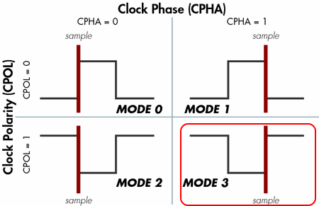

In addition to the streaming Serial protocol, the navX MXP may be accessed over the I2C and SPI buses, using a register-based protocol. This page documents the register-based protocol used on both the I2C and SPI bus.
Register-based protocol overview
Unlike the streaming Serial protocol, which periodically sends out updates messages whenever new data is available, the register based protocol is a "polled" interface, in that the consumer of the navX MXP data (in this case referred to as a "bus master") can request data from the navX MXP at any time. At the same time, when using the register-based protocol the bus master does not know when new data is available.
To help this situation, a timestamp - which is updated whenever new data is available - is made available. Therefore, the general approach to ensure each new data sample is retrieved is to regularly (at the navX MXP update rate) retrieve both the timestamp and the data of interest), and if the timestamp differs from the previous timestamp by the update rate as expressed in milliseconds, then the data sample just retrieved is current, and no data has been missed.
I2C Overview
The navX MXP responds to 7-bit address 50 (0x32) on the I2C bus. If accessing the navX MXP via the MXP I2C bus, ensure that no other device at that address is on the same bus.
The navX MXP I2C bus operates at a speed up to 400Khz.
When accessing the navX MXP via the I2C bus, this following pattern is used:
- The I2C bus master sends the navX MXP I2C address. The highest bit is set to indicate the bus master intends to write to the navX MXP. If the highest bit is clear, this indicates the bus master intends to read from the navX MXP.
- The I2C bus master next sends the starting register address it intends to write to or read from.
- The I2C bus master next initiates I2C bus transactions. The navX MXP supports I2C burst mode for read operations, therefore the navX MXP will respond with register values as long as the I2C bus master continues the transaction, and as long as the last register address has not yet been reached.
If instead the I2C bus master intends to write data to a writable navX MXP register, the bus master should transmit the new register value immediately after sending the register address.
SPI Overview
The navX MXP SPI data is communicated as follows:
- Most-significant bit first
- Maximum Bitrate: 2mbps
- Clock Polarity/Clock Phase - Mode 3

When accessing the navX MXP via the SPI bus, this following pattern is used:
- When the SPI bus master is not communicating with the navX MXP, the SPI bus master must hold the chip select (CS) line high.
- The SPI bus master lowers the CS line.
- The SPI bus master next transmits the register address it intends to read from or write to. If writing, the upper bit (0x80) must be set; if this upper bit is clear, this indicates a read transaction.
- If the SPI bus master is reading, it next transmits the count of registers it wishes to read from. This count must be at least 1, and must be not exceed the maximum register address less the requested register address.
- If the SPI bus master is writing, it transmits the register value to be written to the specified register address.
- The SPI bus master finally transmits an 8-bit cyclic-redundancy code (CRC) value (see CRC calculation section) which is calculated on the register address and count values previously transmitted.
- If the SPI bus master is writing, it raises the CS line to complete the write sequence.
- If the SPI bus master is reading:
- The SPI bus master raises the CS line.
- The SPI bus master delays for 200 microseconds, giving the navX MXP sufficient time to prepare for the upcoming SPI bus transaction.
- The SPI bus master lowers the CS line.
- The SPI bus master initiates a series of SPI bus transactions, where the number of individual 8-bit transfers is equal to the count previously specified, plus one additional transfer for a CRC value transmitted by the nav MXP.
- The SPI bus master raises the CS line to complete the read sequence.
navX MXP Register Map
| Address (Hex) | Name | Range/Data Type |
| 0x00 | WhoAmI | 50 (0x32): navX MXP |
| 0x01 | Board Revision | Unsigned byte |
| 0x02 | Firmware Major Version | Unsigned byte |
| 0x03 | Firmware Minor Version | Unsigned byte |
| 0x04 | Update Rate | Unsigned byte (Hz) |
| 0x05 | Accel FSR | Unsigned byte (Degrees/Sec) |
| 0x06-0x07 | Gyro FSR | Unsigned short(G) |
| 0x08 | Operational Status | NAVX_OP_STATUS_XXX |
| 0x09 | Calibration Status | NAVX_CAL_STATUS_XXX |
| 0x0A | Self-test Status | NAVX_SELFTEST_STATUS_XXX |
| 0x0B-0x0F | Reserved | |
| 0x10 | Sensor Status (low) | NAVX_SENSOR_STATUS_XXX |
| 0x11 | Sensor Status (high) | "" |
| 0x12-0x15 | Current Timestamp | Unsigned long |
| 0x16-0x17 | Yaw | Signed Packed Hundredths (Degrees) |
| 0x18-0x19 | Pitch | Signed Packed Hundredths (Degrees) |
| 0x1A-0x1B | Roll | Signed Packed Hundredths (Degrees) |
| 0x1C-0x1D | Heading | Unsigned Packed Hundredths (Degrees) |
| 0x1E-0x1F | Fused Heading | Unsigned Packed Hundredths (Degrees)) |
| 0x20-0x23 | Altitude | NavX MXP Aero Only (Meters) |
| 0x24-0x25 | Linear Acceleration (X) | Signed Thousandths (G) |
| 0x26-0x27 | Linear Acceleration (Y) | Signed Thousandths (G) |
| 0x28-0x29 | Linear Acceleration (Z) | Signed Thousandths (G) |
| 0x2A-0x2B | Quaternion (W) | Signed Short Ratio (Ratio) |
| 0x2C-0x2D | Quaternion (X) | Signed Short Ratio (Ratio) |
| 0x2E-0x2F | Quaternion (Y) | Signed Short Ratio (Ratio) |
| 0x30-0x31 | Quaternion (Z) | Signed Short Ratio (Ratio) |
| 0x32-0x33 | MPU Temperature | Signed Packed Hundredths (C) |
| 0x34-0x35 | Calibrated Gyro (X) | Signed Short (Degrees/sec in device units) |
| 0x36-0x37 | Calibrated Gyro (Y) | Signed Short (Degrees/sec in device units) |
| 0x38-0x39 | Calibrated Gyro (Z) | Signed Short (Degrees/sec in device units) |
| 0x3A-0x3B | Calibrated Acceleration (X) | Signed Short (G in device units) |
| 0x3C-0x3D | Calibrated Acceleration (Y) | Signed Short (G in device units) |
| 0x3E-0x3F | Calibrated Acceleration (Z) | Signed Short (G in device units) |
| 0x40-0x41 | Calibrated Magnetometer (X) | Signed Short (uTesla in device units) |
| 0x42-0x43 | Calibrated Magnetometer (Y) | Signed Short (uTesla in device units) |
| 0x44-0x45 | Calibrated Magnetometer (Z) | Signed Short (uTesla in device units) |
| 0x46-0x49 | Barometric Pressure | 16:16 float (millibars) |
| 0x4A-0x4B | Pressure Sensor Temperature | Signed Packed Hundredths (C) |
| 0x4C-0x4D | Calibrated Yaw Offset | Signed Hundredths (Degrees) |
| 0x4E-0x4F | Calibrated Quaternion Offset (W) | Signed Short Ratio (Ratio) |
| 0x50-0x51 | Calibrated Quaternion Offset (X) | Signed Short Ratio (Ratio) |
| 0x52-0x53 | Calibrated Quaternion Offset (Y) | Signed Short Ratio (Ratio) |
| 0x54-0x55 | Calibrated Quaternion Offset (Z) | Signed Short Ratio (Ratio) |